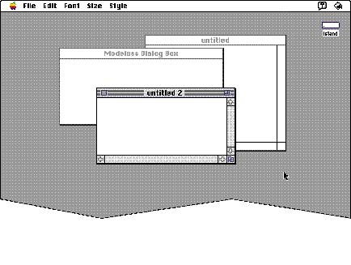
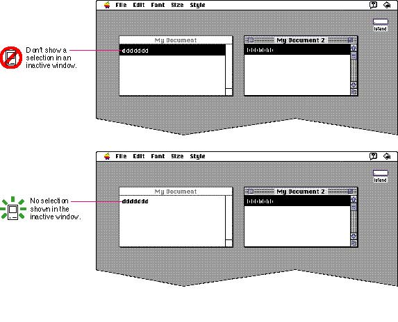

|
The Active WindowPeople can open as many applications and desk accessories as their computer's memory can support, but they interact with only one at a time. The one the user is interacting with is the active application. Its small icon represents the Application menu in the menu bar.As with applications, there can be only one active window at a time. Like the active application, the active window is the one the user is currently working in. It is frontmost and visually distinct from the other windows on the screen. The title bar displays racing stripes and the controls in the window frame are visible. On color screens, the controls in the scroll bars are colored. Your application should update the controls, such as the scroll bars, in its frontmost window whenever the user switches to your application. Figure 5-8 shows what the active window looks like compared to other windows on the screen.  All other windows, whether they belong to your application or another, are inactive. Things can happen to documents in inactive windows, but only the active window interacts with the user. For example, if the user chooses Save, the command affects only the active window. To make a window active, the user clicks anywhere in its content area or window frame. It appears to the user that the window "moves" to the frontmost plane and any parts that were previously covered by other windows become visible. When a user clicks in an application window, the click activates the window, but makes no other changes. To make a selection in an application window, the user must click again. This behavior protects the user from losing an existing selection when the window becomes active. When the user activates a window that had been deactivated, reinstate the window just the way it was before the window was deactivated. The scroll box should be in the same position and the same selection, if any, should still be highlighted. Try not to create a great deal of flashing or other visual disturbance when you update windows for your application. This action should take place with as little distraction to the user as possible. When a window that belongs to your application becomes inactive, the visual characteristics of the active state reverse. The close box, zoom box, size box, scroll box, and stripes in the title bar disappear. Don't display the scroll bars and their associated controls (scroll box and arrows) when a window from your application is inactive; however, the lines that outline the area of the scroll bar itself should remain visible. For example, notice the appearance of the scroll bar in the "untitled" window shown in Figure 5-8; only the outline is displayed. Don't display a selection in an inactive window. Users may have difficulty determining where the next keyboard or mouse action will take effect. (You can use a secondary selection technique, such as an outline on a black-and-white monitor or gray on a color monitor, to indicate where a selection is in an inactive window.) Figure 5-9 shows what can occur when two windows simultaneously display selection information. Figure 5-9 Don't show a selection in an inactive window  |